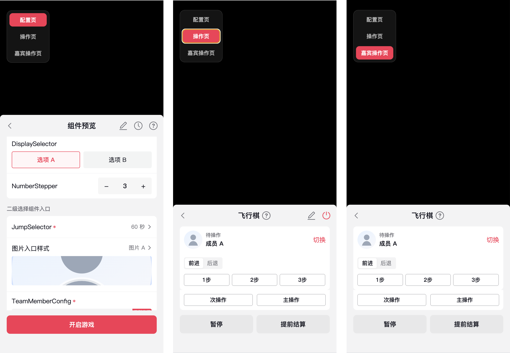

Panel 组件库维护指南
一句话原则：组件负责外观和行为，Gallery 负责验证，文档说明何时使用；业务页面不要临时补组件能力。
这份指南只保留维护组件库最常用的路径：先看懂文件夹，再定位应该修改哪里，最后验证和交付。
文件夹地图
Repository Root
panel/
按职责分成四个区域
入口与约束
先读总规则，再从公共入口使用组件AGENTS.md总说明与阅读顺序index.ts路由服务台settings-panel.css把整套 panel 的基础样式接起来settings-panel.test.ts组件库契约测试
组件实现
组件目录放 TSX/CSS，分类规则放同层 AGENTS.mdfields/一级配置pickers/二级选择shell/页面结构operation/操作页shared/提供所有组件都能复用的共享资源和基础能力
reference/ 跨组件规则
负责跨组件与页面级决策configuration_rule.md内容放哪一类页面component_usage.md需求应该选哪个组件component_composition.md组件如何组合成页面
预览与运行
只负责展示、验证、宿主能力和运行资源gallery/预览验证
runtime/宿主动作assets/图标资源src/React 启动index.htmlGallery 宿主
02 / COMPONENT
02. 每个组件
ComponentName/
├── ComponentName.tsx
└── ComponentName.css注释：每个组件都有 TSX 交互代码、CSS 样式代码以及 MD 描述。
AGENTS.md 说明同类组件怎么维护，reference/*.md 负责跨组件的选型、分类和组合规则。
总入口
panel/AGENTS.md
分类级规则同类组件如何使用与维护
fields/AGENTS.mdpickers/AGENTS.mdshell/AGENTS.mdoperation/AGENTS.mdshared/AGENTS.md
跨组件规则内容分类、组件选型与页面组合
reference/configuration_rule.mdreference/component_usage.mdreference/component_composition.md
按问题定位文件
Repository Root
panel/
按问题定位要看的文件
入口与约束
导出、公共样式和契约测试AGENTS.md总说明与阅读顺序index.ts组件路由settings-panel.css把整套 panel 的基础样式接起来settings-panel.test.ts组件库契约测试
组件实现
TSX / CSS / 分类级 AGENTS.mdfields/一级配置pickers/二级选择shell/页面结构operation/操作页shared/提供所有组件都能复用的共享资源和基础能力
reference/ 跨组件规则
内容分类、组件选型与页面组合configuration_rule.md这是哪种页面 / 哪种配置任务component_usage.md这个配置项该用哪个组件component_composition.md这些组件怎么排布、怎么组合
预览与运行
Gallery、宿主能力和运行资源gallery/预览案例runtime/宿主动作assets/图标资源src/React 启动index.htmlGallery 宿主
常用 Prompt
维护完 panel 仓库后，可以把这些 prompt 丢给 AI 做第一轮风险筛查。它们不能替代人眼判断，但能帮你先找出高风险项。
我想在 panel 组件库里做一个小型规则改动，请先帮我判断这条规则应该写到哪个文件夹的哪个 Markdown。
需求：
{把你的具体需求写在这里}
（示例：在 panel 里我想更新一个 TeamMemberConfig 的 md：如果整个配置页只有一个 TeamMemberConfig 的时候，右上角的彩色角标就不显示了。）
请你回答：
1. 应该写到哪个 md 文件。
2. 为什么写到这里，而不是其他 md。
3. 是否还需要同步检查代码、Gallery 或测试；如果无法判断，请标记“需要人工确认”。
要求：
- 输出必须包含明确文件路径。
- 如果涉及代码、Gallery 或测试同步，也请列出需要后续检查的位置。请审查 panel 组件库的文档规则、组件实现、Gallery 和测试是否一致，不要修改文件。
重点检查：
1. Markdown 是否有失效路径、错误文件名、旧组件名、旧目录名。
2. 同一条详细规则是否重复出现在多个 md 中。
3. 已经沉淀到 TSX / CSS / token 的细节是否仍在 Markdown 里重复维护。
4. 每个 md 的职责是否清晰：
- AGENTS.md 是否写当前规则和阅读顺序
- reference/component_usage.md 是否只写组件选型
- reference/configuration_rule.md 是否只写内容放哪类页面
- reference/component_composition.md 是否只写页面组合方式
- gallery/AGENTS.md 是否只写 Gallery 展示规则
5. 文档说的 props、能力、状态、CSS class、token 是否和代码实际支持一致。
6. 文档说的二级页、确认写回、取消不更新等交互，代码或 Gallery 是否真的支持。
7. Gallery 是否只调用组件，不通过 Gallery CSS 改组件内部样式。
8. CSS 是否有裸值、无效 class、旧 variant 或 token 使用不一致。
9. 测试文件、示例或 Markdown 是否还断言旧规则、旧像素或旧交互。
10. 区分“文档引用组件说明”和“完整重复维护同一条规则”，只有后者算重复。
请输出：
- 必须处理
- 建议处理
- 可以保留
- 需要人工确认
- 涉及文件
- 文档说法
- 代码实际情况
- 建议是改代码、改文档，还是需要人工确认请帮我对当前 panel 组件库做交付审查，不要修改文件，先筛出风险。
检查：
1. 文件夹结构是否干净，是否有临时文件、构建产物、旧备份或不该交付的内容。
2. panel/index.ts 是否导出了当前正确主路径，业务是否只从推荐入口导入。
3. 是否还有直接引用旧路径的 import。
4. 新增或修改的组件是否放在正确目录，并在 Gallery 中有必要展示。
5. Gallery 是否只调用组件，不写组件内部样式，并覆盖关键状态和关键交互。
6. Markdown 是否存在路径错误、旧规则、重复规则或和代码冲突。
7. CSS 是否有裸值、无效 class、旧 variant 或 token 使用不一致。
8. 测试或示例是否还断言旧规则。
9. 构建和必要测试是否需要重新跑。
10. 所有 icon 是否都导出为透明底 PNG；如果无法确认，请标记为“需要人工确认”。
11. 是否有必须人工肉眼确认的视觉点或设计取舍。
请按以下格式输出：
- 可以交付
- 交付前必须处理
- 建议后续优化
- 需要人工确认
- 建议下一步验证命令
要求：
- 不要直接修改。
- 不要只列文件名。
- 每个问题都说明原因和风险。
- 如果没有发现问题，也要说明检查过哪些范围。